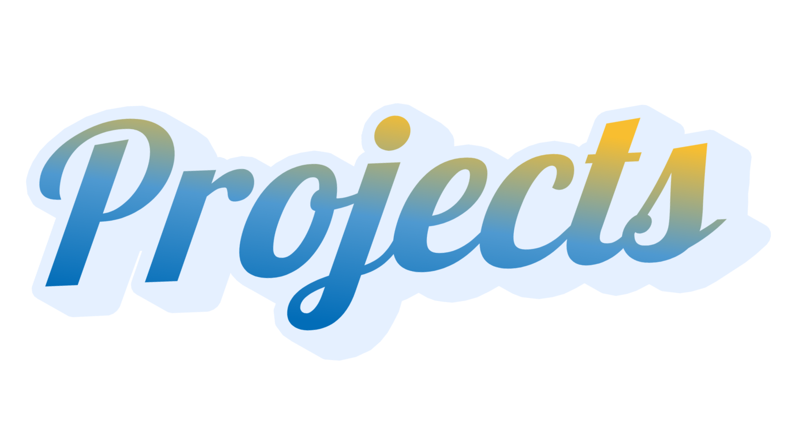
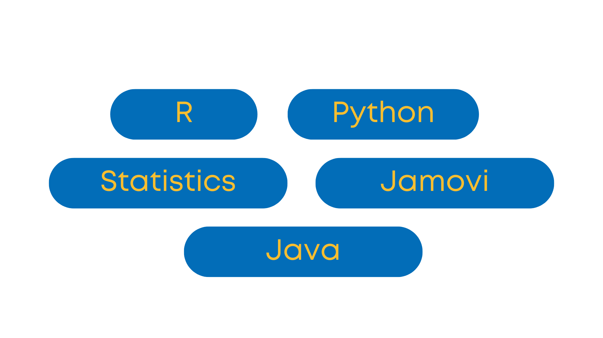

I developed a two-player game, using Java, where players embark on a fast-paced adventure, gathering taho while navigating dynamic maps and facing off against a rival player. It has a vibrant art style captures the essence of Filipino culture, with lively characters and colorful environments.
I developed an application, using RShiny, that implements Simplex Method to find the cheapest and most nutritious combination of foods that will minimize the cost and satisfy nutritional needs.
I developed an interactive toolkit, using R, that performs statistical tests on one population mean. It is designed to simplify hypothesis testing by guiding you through essential steps such as data exploration, assumption checking, and test execution.

I have a strong background in programming and data analysis, with proficiency in R, Java, and Python for coding and statistical modeling. Additionally, I am experienced in using Jamovi for data visualization and statistical analysis. My skills in statistics allow me to interpret data effectively, conduct thorough analyses, and derive meaningful insights.
I am a third-year BS Statistics student from the University of the Philippines Los Baños, currently taking up CMSC 100: Web Programming as an elective course this academic year 2023-2024. I have keen interest in data analysis, programming, and problem-solving. To enhance my technical skills, I have chosen Computer Science as my elective, allowing me to bridge the gap between statistical analysis and computational methods. Throughout my studies, I have developed proficiency in R, Python, and Java. Additionally, I have experience working with Jamovi, a tool for statistical analysis and visualization. My coursework has strengthened my ability to interpret data, apply various statistical techniques, and work with large datasets efficiently.